本篇目录
4. 大模型的位置编码是干什么用的？sin/cos、RoPE、ALiBi 有什么区别？
👔面试官：来讲讲大模型为什么需要位置编码？sin/cos、RoPE、ALiBi 这几种各有什么区别？
🙋♂️我：位置编码就是让模型知道每个词在第几个位置，用 sin 和 cos 函数算一下加到 token embedding 上就行。
👔面试官：……「加到 embedding 上」是怎么加？是直接做加法还是别的什么操作？为什么要用 sin 和 cos 而不是 1, 2, 3, 4 这种简单序号？再说，RoPE 你也是「加到 embedding 上」吗？那它不就和 sin/cos 一样了？
🙋♂️我：哦哦，RoPE 是相对位置编码，跟 sin/cos 不一样，是给 Q 和 K 做旋转。
👔面试官：「做旋转」？怎么旋转？为什么旋转能表达位置？为什么相对位置编码比绝对位置编码强？还有 ALiBi 是什么思路？为什么 Llama 选 RoPE 不选 ALiBi？
🙋♂️我：呃……ALiBi 我有点忘了……反正都是位置编码嘛，效果应该差不多吧？
👔面试官：「效果差不多」？那为什么主流模型都换成 RoPE 了？为什么长上下文外推 RoPE 比 sin/cos 强？为什么 ALiBi 有它的支持者但没成主流？这些问题没搞清楚，面试就是被怼。回去补一下。
从这几个反问里能听出，位置编码这道题真正想问的是「为什么 LLM 不用 sin/cos 而都跑去用 RoPE 了」。三种方案的设计思路、各自的外推上限、对长上下文的影响，把这条主线讲透，分高低自然就出来了。
💡 简要回答
我理解位置编码要解决的问题，本质上是 Self-Attention 的「位置盲」缺陷。Attention 的计算是对称的，不管词序怎么变，注意力分数都一样。「我打你」和「你打我」对模型来说是一回事，所以必须显式注入位置信息。
三种主流位置编码各有不同的设计哲学。
第一种是 sin/cos 绝对位置编码（原始 Transformer 用的）。给每个位置算一组固定的 sin/cos 值，加到 token embedding 上。优点是简单、不需要训练参数；缺点是「绝对位置」太死板，模型实际关心的是「相对距离」，而且训练时见过的最长位置之外的位置（比如训练 2K，推理时上 4K），效果会断崖下跌。
第二种是 RoPE（旋转位置编码）。它不是把位置信息「加」到 embedding 上，而是「旋转」Q 和 K 向量。每个位置对应一个旋转角度，位置越靠后旋转的角度越大。两个 token 做注意力时，它们 Q/K 的点积自然带上了「相对距离」的信息。优点是相对位置直接编进了点积里、长上下文外推能力强，配合 NTK、YaRN 等扩展技巧，以及必要的继续训练或长上下文校准，可以把上下文推到更长。所以 Llama、Qwen、DeepSeek 等主流开源模型大量使用 RoPE。
第三种是 ALiBi（Attention with Linear Biases）。最简单粗暴，直接在注意力分数里加一个「距离惩罚」，离得越远扣分越多，斜率随 head 不同。优点是不引入任何可学习参数、长上下文外推天然就好；缺点是表达力弱一些，对位置的精细建模不如 RoPE。MosaicML 的 MPT、BLOOM 用过 ALiBi，但没成主流。
最关键的一句话是，主流大模型几乎全部选择了 RoPE，因为它在「相对位置编码 + 长上下文外推 + 兼容现代推理优化」三个维度上都最均衡。
📝 详细解析
为什么 Attention 必须有位置编码
要理解位置编码，得先搞清楚 Attention 本身有什么毛病。
Self-Attention 的核心计算是 softmax(QK^T/√d) · V，每个 token 通过 Q 去和所有 token 的 K 做点积、算注意力权重，然后按权重加权聚合所有 token 的 V。这个过程有一个致命特点：它是对位置不敏感的，也就是俗称的「位置盲」。
什么意思呢？看个例子。
假如输入是「我打你」，每个字都被转成 embedding 向量。Attention 计算时，「我」会去看「打」和「你」，「打」会去看「我」和「你」，「你」会去看「我」和「打」。这个过程里，模型只知道「这三个字之间互相算了注意力」，但完全不知道谁在前谁在后。
如果把输入换成「你打我」，这三个 embedding 一模一样（只是位置变了），Attention 算出来的结果和「我打你」几乎完全相同。但这两句话语义是反的。模型如果分不清位置，就分不清主语和宾语，根本没法理解语言。
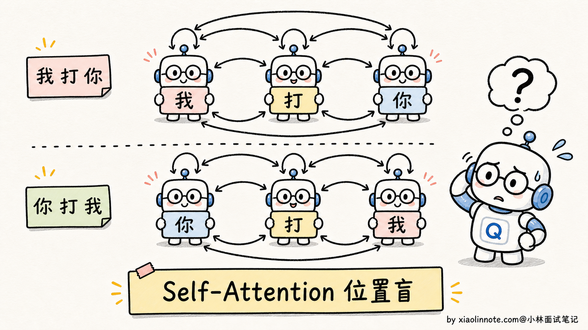
那为什么不能直接用「1, 2, 3, 4」这种位置序号？
因为序号是离散的整数，加到连续的 embedding 向量上会很别扭：第 1000 位的「1000」会把原本的 embedding 数值整个拉爆（embedding 通常是 -1 到 1 之间的小数）；而且整数序号对长序列没法泛化，训练时见过 1-2048，推理时来了 4096，这个数字模型从来没见过，效果一定崩。
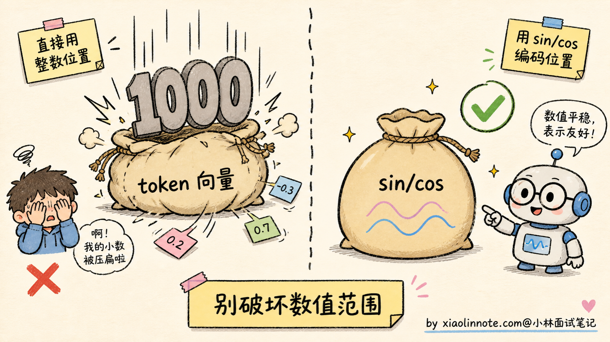
所以位置编码必须满足三个要求：
- 数值范围合理，不能把 token embedding 给覆盖掉
- 能区分不同位置，每个位置都有独特的「指纹」
- 能泛化到长序列，最好支持外推到训练时没见过的长度
带着这三个要求，再来看三种主流方案就好理解了。
sin/cos 绝对位置编码：原始 Transformer 的方案
2017 年的 Transformer 论文用的就是 sin/cos 位置编码，简称 Sinusoidal PE。它的核心思路是用一组不同频率的 sin/cos 函数，给每个位置生成一个独特的「指纹向量」。
公式不展开背，直觉上这样理解。模型 embedding 维度有 d 维（比如 d=512），把这 d 维分成 d/2 对，每对用一组 sin/cos：
- 第 1 对的频率最快（高频），相邻位置之间区别明显，适合区分近距离的位置
- 第 d/2 对的频率最慢（低频），相邻位置几乎一样，但跨越很远的位置才能区分开
类比一下：就像几个不同频率的振子叠加，高频振子记录「精细位置」，低频振子记录「粗略位置」。每个位置在 d 维空间里都有一个独特的 sin/cos 组合，就是它的「身份证」。
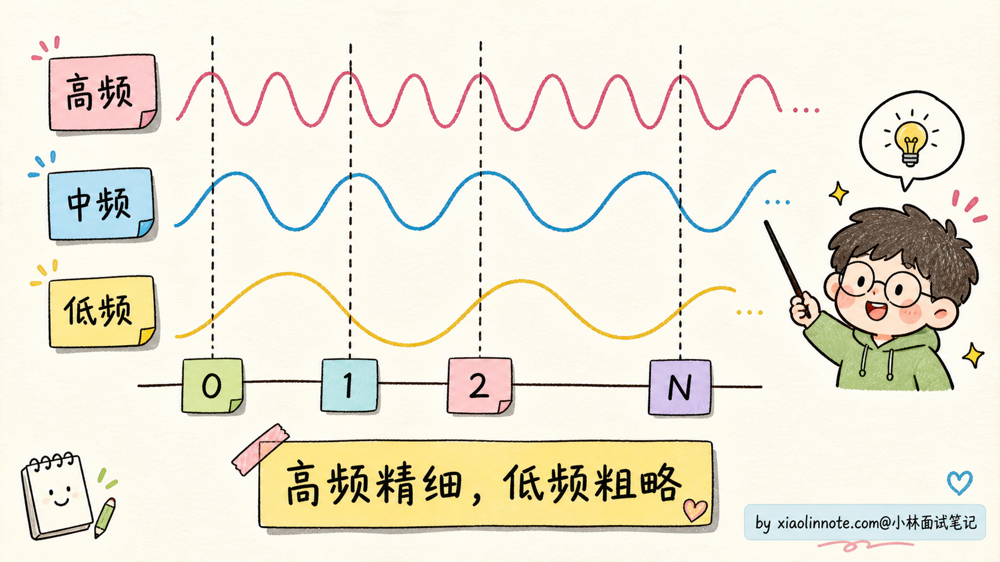
这个方案怎么用？把每个位置的 sin/cos 指纹向量直接加到对应 token 的 embedding 上。即「最终输入向量 = token embedding + position embedding」。
为什么是「加」而不是「拼接」？因为加法不增加维度，结构上更省事。神经网络强大到可以从相加的结果里把这两部分信息「自动解开」。
sin/cos 编码的优点是显而易见的：
- 零参数：完全是数学公式算出来的，不占模型参数
- 泛化性看起来不错：理论上 sin/cos 可以算到任意位置的指纹
但它的致命问题是长上下文外推能力差。
虽然理论上 sin/cos 可以算任意长度，但实际效果会在训练时见过的最长位置之外迅速恶化。如果模型只在 2K 长度上训练过，推理时给它 4K 输入，模型表现会断崖下跌。原因是模型在训练时只学过「2K 以内的相对位置关系」，超出 2K 的相对距离它从来没见过，注意力权重的分布会乱掉。
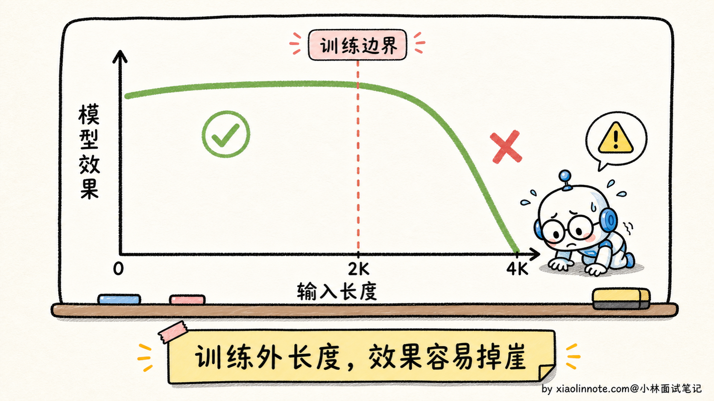
所以 sin/cos 编码在小模型时代还行，到了大模型时代（要支持几十 K 甚至上百 K 长上下文）就明显不够用了。
绝对位置 vs 相对位置：模型真正想要什么
在讨论 RoPE 之前，先想一个特别生活化的问题：你跟别人介绍你坐在哪儿，是说「我坐在前排第 3 个座位」，还是说「我坐在 XX 旁边」？
大部分时候你会选第二种，因为「相对位置」比「绝对位置」更有信息量。同样在 NLP 里，模型理解语言时关心的也是相对位置，不是绝对位置。
举个例子。中文里「主语动词宾语」这种句法关系，关键的不是「主语在第 3 位、动词在第 5 位」这种绝对编号，而是「主语和动词之间隔了 2 个词」这种相对距离。一句话不管前面加了多少修饰语、语气词，主语和动词的相对关系是稳定的。同样的「我吃饭」，不管你前面加「今天」「中午」「饿了所以」，主谓宾的相对距离都没变。
绝对位置编码（比如 sin/cos）的问题就在这里。它给每个位置发一个独立的「身份证」，要让模型自己从「位置 3 的身份证」和「位置 5 的身份证」推断出「相对距离是 2」。这个推断完全靠模型在训练里慢慢碰运气学到，没有显式的归纳偏置。
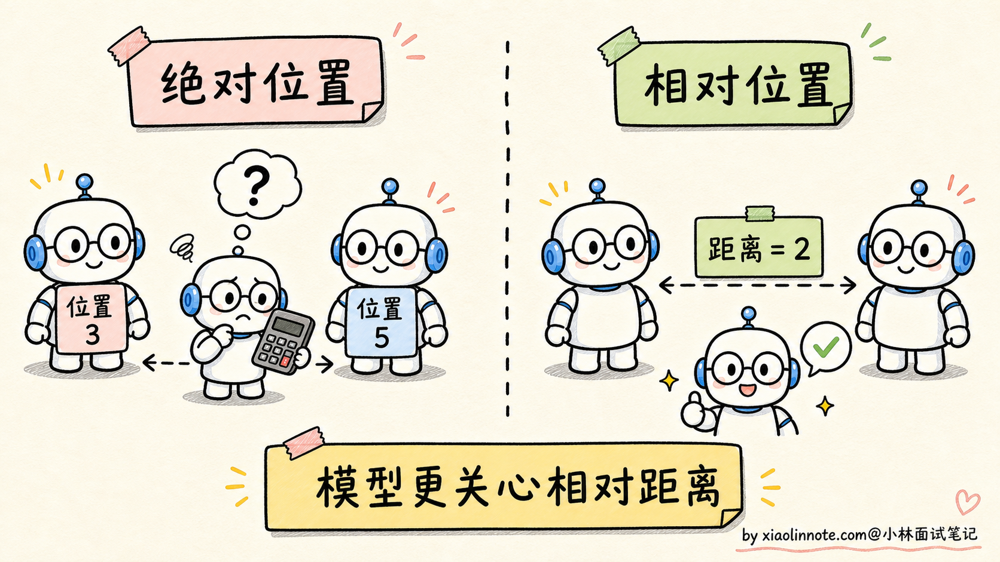
相对位置编码的思路就是把「相对距离」这个信息显式地编进注意力计算里，让模型不用自己算。具体做法是让两个 token 的位置编码只取决于它们的差值 m-n，跟 m 和 n 各自的绝对值无关。这就是 RoPE 和 ALiBi 共同的出发点，它们走的是不同的实现路线，但目标一致。
RoPE：用旋转把相对位置编进点积
RoPE（Rotary Position Embedding，旋转位置编码）是 2021 年中国学者苏剑林（@bojone）提出的，现在已经是大模型的标配。核心思路一句话：不把位置信息加到 embedding 上，而是旋转 Q 和 K 向量。
什么意思？
在 Attention 计算里，每个 token 都会被投影成 Q（Query）和 K（Key）。RoPE 在这一步动手脚：每个 token 的 Q/K 向量根据它的位置 m，被旋转一个对应角度 mθ（θ 是预设常数）。位置 0 的 token 不旋转，位置 1 的旋转 θ，位置 2 的旋转 2θ，依此类推。
类比一下：把 Q/K 向量想象成钟表的指针，每个位置对应一个不同时刻的指针朝向。位置越靠后，指针转得越多。
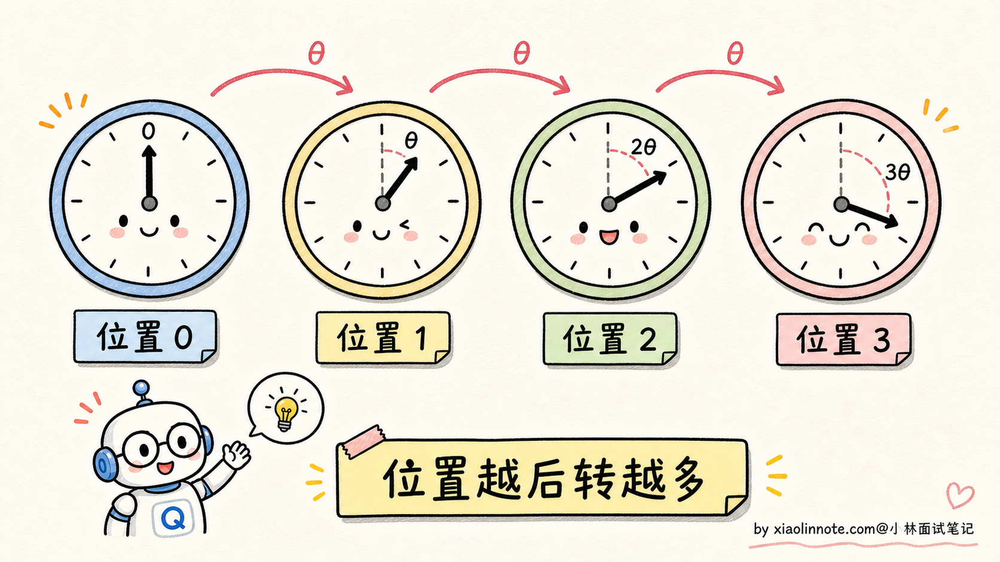
为什么旋转能表达位置？关键的数学性质是：两个旋转后的向量做点积，结果只依赖于它们的「旋转角度差」。
具体说，位置 m 的 Q 和位置 n 的 K 做点积，旋转之后的点积结果只跟 (m-n) 这个相对距离有关，跟 m 和 n 各自的绝对值无关。这就把「相对位置」信息天然地编进了 Attention 计算里，模型不用自己学。
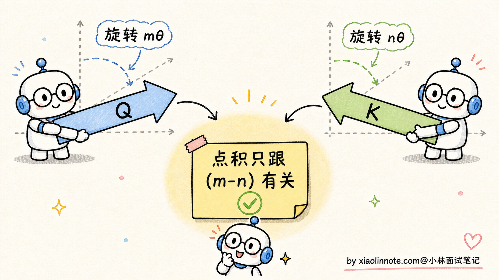
RoPE 的优点非常突出，几个层面叠加起来才让它成为现在的标配。
最直观的优点是天然的相对位置编码，不用模型自己学相对关系，直接编进点积。这是 RoPE 区别于 sin/cos 的核心。然后是零参数，整个操作就是数学上的旋转，不引入任何可学习参数，对模型容量没有额外开销。还有一个被忽视的细节是保留 token 向量的长度，旋转操作不改变向量的模长只改变方向，所以不会破坏原本 embedding 的数值范围，训练稳定性更好。最后是和现代推理优化的兼容性，RoPE 是在 Q/K 上做的旋转，跟 KV Cache、Flash Attention、MQA/GQA 这些主流推理优化都能无缝叠加，不会产生冲突。
更关键的是 RoPE 的长上下文外推能力远好于 sin/cos。原因是 RoPE 的旋转是连续的角度变化，本身没有「训练截止」这个概念。即使训练时只见过 2K，推理时来了 4K，多出来的位置也只是更大的旋转角度而已，模型不会「彻底懵」，效果衰减比 sin/cos 平缓很多。
再加上后来发明的 NTK Scaling、YaRN、Position Interpolation 等扩展技巧（核心都是调整 RoPE 的频率参数），可以把训练时的 2K 推到 32K、100K 甚至更长。但这里别说成「几乎无损」的银弹，外推效果取决于模型、任务、长度倍率和是否做过继续训练。推得越远，越需要专门评测长文检索、多跳推理和位置敏感任务。
谁在用 RoPE？基本上 2023 年之后所有主流开源大模型都用：
- Llama 1/2/3 全系
- Qwen 1/2/3 全系
- DeepSeek V1/V2/V3/R1 全系
- Mistral / Mixtral 全系
- GLM 系列
可以说 RoPE 已经是大模型架构的事实标准。
ALiBi：直接给注意力加距离惩罚
ALiBi（Attention with Linear Biases）是另一种相对位置编码方案，2022 年提出，思路比 RoPE 更暴力：根本不动 Q、K、V，直接在注意力分数里加一个「距离惩罚项」。
具体做法：在 softmax(QK^T) 这一步之前，给每对 token 的注意力分数加上一个偏置项，偏置值是 -m × |i-j|，其中 |i-j| 是两个 token 之间的距离，m 是一个固定的斜率（每个 head 不同）。
直观理解：离得越远，注意力分数被扣得越多，模型越倾向于关注近邻的 token。每个 head 用不同的斜率，等于让不同的 head 关注不同范围的距离（有的 head 关注近邻，有的 head 关注远处）。
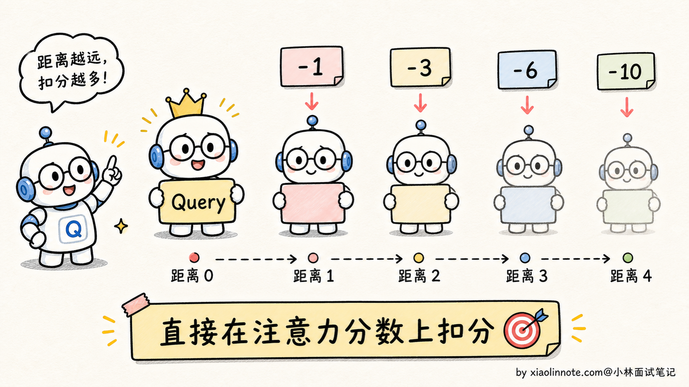
ALiBi 的优点：
- 零参数：和 RoPE 一样不引入可学习参数
- 极简实现：就是加一个偏置矩阵，比 RoPE 还简单
- 天然支持长上下文外推：因为距离惩罚是线性的，不存在训练截止，理论上多长都行
但 ALiBi 也有明显短板：
- 表达力弱：所有位置信息都靠「距离惩罚」这一个机制传递，对精细的位置关系（比如「主语动词宾语的语序」）建模不如 RoPE 灵活
- 过强的局部偏置：线性距离惩罚会让模型过度关注近邻，对需要捕捉长距离依赖的任务不利
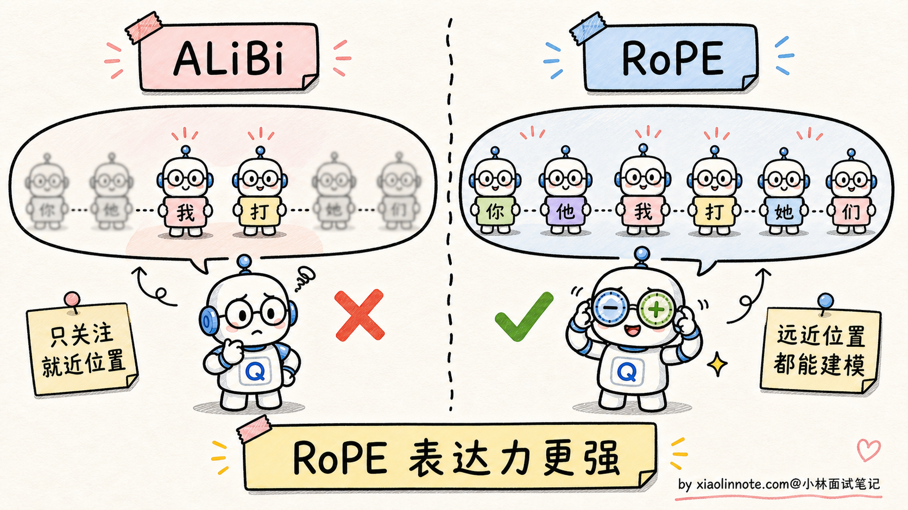
谁用过 ALiBi？
- MosaicML 的 MPT 系列
- BLOOM 的某些版本
但这些模型都不是主流大模型，ALiBi 没能在大厂主力模型上推广开。
三种方案对比：为什么 RoPE 赢了
把三种方案放到一起比较：
| 维度 | sin/cos | ALiBi | RoPE |
|---|---|---|---|
| 编码类型 | 绝对位置 | 相对位置（距离惩罚） | 相对位置（旋转） |
| 是否可学习参数 | 否 | 否 | 否 |
| 注入方式 | 加到 token embedding | 加到注意力分数 | 旋转 Q/K 向量 |
| 长上下文外推 | 较差（容易断崖） | 好（线性外推） | 很强（配合 NTK/YaRN，常需校准或继续训练） |
| 表达力 | 中等 | 弱（过强局部偏置） | 强 |
| 主流采用 | 原始 Transformer | MPT、BLOOM | Llama / Qwen / DeepSeek 全系 |
为什么 RoPE 最终赢了？三个理由。
第一，长上下文外推能力。这是 2023 年之后最重要的需求之一。RoPE 配合 NTK/YaRN 这套生态，外推能力很强，但真正上线前还要看长上下文评测，不是把参数一改就天然无损。
第二，相对位置 + 表达力的平衡。ALiBi 虽然外推也好，但表达力不够；sin/cos 表达力够，但外推差。RoPE 是唯一兼顾两者的方案。
第三，工程兼容性。RoPE 只在 Q/K 上做旋转，不改变其他计算，和 KV Cache、Flash Attention、MQA/GQA 都能无缝叠加。这一点对工业界部署至关重要。
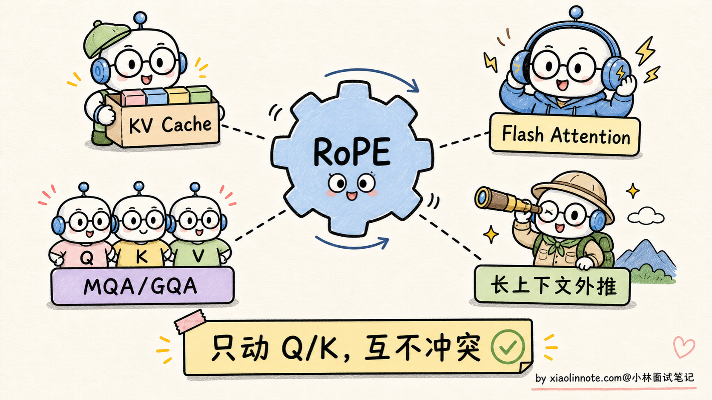
拓展：长上下文外推（NTK / YaRN 简介）
最后简单提一下 RoPE 的外推扩展技巧，因为这一块面试时容易被追问。
RoPE 训练时见过 2K，怎么推到 100K？直接喂 100K 输入是不行的，因为旋转角度超过 2K 之外，模型从来没见过那么大的角度，效果还是会衰减。所以业界搞出了几个「调整 RoPE 频率参数」的技巧：
- Position Interpolation（PI）：把 100K 的位置「等比例缩小」到 2K 范围，比如位置 50000 当作位置 1000 处理。简单粗暴但有效，代价是「精细距离信息被压缩」
- NTK-aware Scaling：调整 RoPE 不同维度的频率，让高频维度（精细位置）几乎不动，低频维度（粗略位置）按比例缩小。比 PI 更精细
- YaRN（Yet another RoPE extensioN）：在 NTK 基础上做了进一步精细化，引入温度参数和分段策略，目前是大厂用得最多的方案
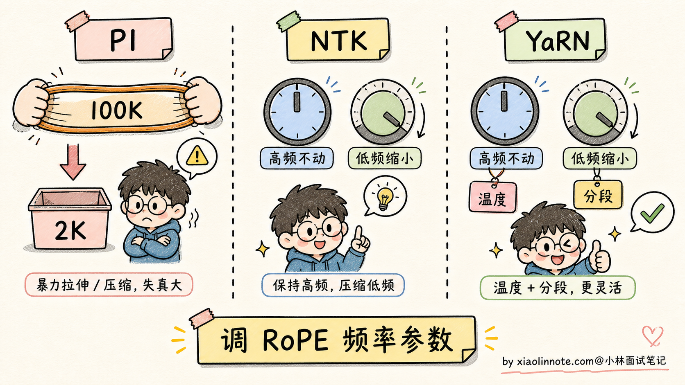
需要强调的是，这些外推技巧有些可以在推理时直接改 RoPE 参数就看到收益，但要做到稳定的 100K+ 长上下文，很多模型还会配合长上下文继续训练、校准数据或专门的评测筛选。RoPE 在长上下文时代地位稳固，不是因为它能无成本无限外推，而是因为它给了社区一个很好调、很好扩展的基础。
🎯 面试总结
回到开头那段对话，问到位置编码，最重要的是先讲清楚为什么需要它。Self-Attention 是「位置盲」的，「我打你」和「你打我」算出来的注意力是一样的，所以必须显式注入位置信息。而且不能直接用 1, 2, 3, 4 这种序号，因为数值范围会破坏 embedding，长序列还没法泛化。这一句铺垫先讲到，面试官就知道你理解为什么需要位置编码这件事。
讲完铺垫之后，再把三种主流方案的设计哲学讲明白。sin/cos 是绝对位置编码，加到 token embedding 上，简单但长上下文外推差；RoPE 是相对位置编码，通过旋转 Q/K 向量把相对距离编进点积，外推能力强，是当前主流；ALiBi 是另一种相对位置编码，直接在注意力分数上加距离惩罚，零参数极简，但表达力弱、局部偏置过强，没成主流。三种方案的设计哲学和工业界采用情况都点出来，体现你对这条技术路线有完整的视角。
最关键的一句话是：RoPE 赢在「相对位置 + 长上下文扩展 + 工程兼容性」三个维度的均衡。配合 NTK Scaling、YaRN 等扩展技巧，再加上必要的长上下文训练或校准，能把上下文扩到很长，所以 Llama、Qwen、DeepSeek、Mistral 等主流开源模型大量使用 RoPE。
如果还想再加分，可以提一句长上下文外推的具体方案（PI / NTK / YaRN），或者点出 RoPE 兼容 KV Cache、Flash Attention、MQA/GQA 等现代推理优化，这才是它能在工业界站稳脚跟的关键。能讲到这一层，面试官基本就没什么追问的了。
对了，大模型面试题会在「公众号@小林面试笔记题」持续更新，林友们赶紧关注起来，别错过最新干货哦！